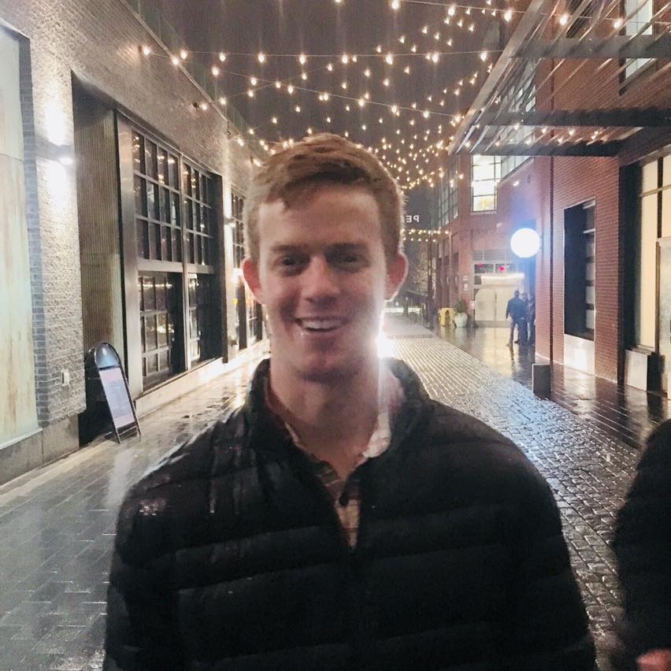

About Me

My name is Charlie Sowers. I graduated from UNC Chapel Hill in May of 2016 with a B.S. in Mathematics and a Minor in Statistics. I work as a Statistical Programmer for IQVIA, using SAS programming language to create statistical outputs using clinical trial data.
I am currently taking the UNC Chapel Hill Coding Bootcamp to learn the basics of full-stack development. I have experience programming in Python, Java, and C from programming coursework during undergrad, and during the bootcamp I will learn HTML, CSS, Javascript, and JQuery.